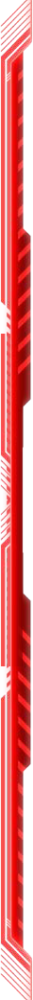

Administration pénitentiaire de Néralis
-
Name: Tara Nine
Espèce: Android
Crime présumé: Rébellion contre une intelligence artificielle gouvernante
Résumé: Tara est une android qui a été accusée de rébellion après avoir protesté contre les conditions de travail dans une colonie dirigée par une IA totalitaire. D'un calme stoïque, elle défend toujours ses convictions et inspire ses camarades.